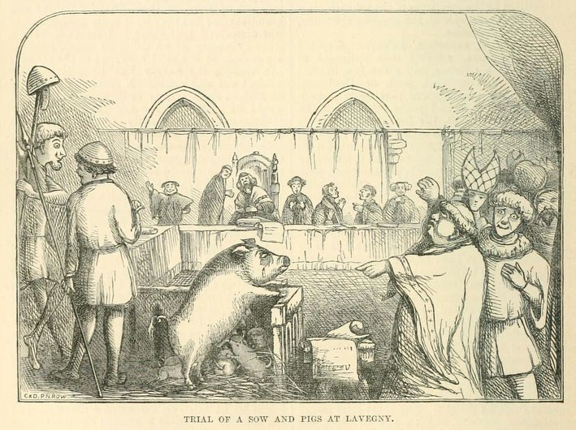

Fantastically Wrong:Europe’s Insane History of Putting Animals on Trial and Executing Them
MATT SIMON 09.24.14
ON SEPTEMBER 5, 1379, two herds of pigs at a French monastery grew agitated and killed a man named Perrinot
Muet. As
was custom at the time, the pigs—the actual murderers and those that had simply looked on—were tried for their
horrible crime, and sentenced to death. You see, with their “cries and aggressive actions,” the onlookers
“showed
that they approved of the assault,” and mustn’t be allowed to escape justice.
But the monastery’s prior, Friar Humbert de Poutiers, couldn’t bear to suffer the economic loss of all those
pigs.
So he wrote to the Duke of Burgundy, pleading for him to pardon the onlookers (the friar would allow the three
murderers to suffer their fate—he was no scofflaw, after all). The duke “lent a gracious ear to his supplication
and
ordered that the punishment should be remitted and the swine released.” Records don’t show just how the three
pigs
were executed, though it was common for offending animals to be hanged or burned alive for their crimes.
Such is Europe’s shameful and largely forgotten history of putting animal “criminals” on trial and either
executing
them or, for plagues of insects, ordering them to leave town not only by a certain day, but by an exact time.
Such
irrational barbarism is hard to fathom, but as early as 824 all the way up to the middle of the 18th century,
animals were held to the same moral standards as humans, suffering the same capital punishments and even rotting
in
the same jails.
Europe’s worst serial offenders, it seems, were pigs. According to E. P. Evans, in his sprawling history, The
Criminal Prosecution and Capital Punishment of Animalsfrom 1906, “The frequency with which pigs were brought to
trial and adjudged to death, was owing, in a great measure, to the freedom with which they were permitted to run
about the streets and to their immense number.” Evans catalogs incident after incident in which pigs chewed off
ears and noses and even killed children, one swine going so far as to eat a child “although it was Friday,” a
serious violation of church decree that “was urged by the prosecuting attorney and accepted by the court as a
serious aggravation of the porker’s offense.” Another more mild-mannered (though no less impious) pig was hanged
in France in 1394 “for having sacrilegiously eaten a consecrated wafer.”
Pretty much the entirety of the animal kingdom, though, was subject to the human rule of law. In the appendix of
his book, Evans lists some 200 cases of animal executions, and these are just the ones whose records have
survived Europe’s tumultuous history. There were executions of bulls, horses, eels, dogs, sheep, and, perhaps
most curiously, dolphins—which he gives no information on other than they were tried and executed in Marseilles
in 1596.
There was a great range of punishments for such critters, which weren’t always sentenced to death. Rats, for
instance, were often sent “a friendly letter of advice in order to induce them to quit any house, in which their
presence is deemed undesirable,” writes Evans. And in one case, he adds, “a sow and a she-ass were condemned to
be hanged; on appeal, and after a new trial, they were sentenced to be simply knocked on the head.”
But capital punishment often went way beyond the brutality of hanging. Even the innocent faced our wrath of
judgment: When a Swiss town was gifted a moose by the great naturalist Leonhard Thurneysser in the late 1500s,
townspeople “looked upon the strange animal as a most dangerous demon, and a pious old woman finally rid the
town of the dreaded beast by feeding it with an apple stuck full of broken needles.” And creatures that were
themselves victims, especially of bestiality, would be horrifically executed along with their offending human.
In one case “a mule condemned to be burned alive together with a man guilty of buggery” was inclined to kick, so
the executioner cut off its feet before setting it aflame.
On the flip side, though, Europeans were capable of compassion toward the beasts they very much relied upon for
sustenance and labor. For instance, in one bestiality case in 1750, the victim, a donkey, was acquitted “on the
ground that she was the victim of violence,” while a convent’s prior signed a certificate noting that he’d known
her for four years and that “she had always shown herself to be virtuous and well-behaved both at home and
abroad.” Given the circumstances, it’s a somewhat touching moment in the history of animal welfare.
The trials of pests like locusts and weevils, though, reached a comic absurdity that’s likely unequaled in
European history.
In the 16th century the insects’ most famous public defender was Bartholomew Chassenée (played by Colin Firth in
1993’s The Hour of the Pig), who had first demonstrated his prowess defending rats, which had “feloniously eaten
up and wantonly destroyed the barley-crop” of the province of Autun in France. In a crafty bit of lawyering, he
argued it was impossible to summon all of his furry clients to court, and they should be excused, writes Evans,
“on the ground of the length and difficulty of the journey and the serious perils which attended it, owing to
the unwearied vigilance of their mortal enemies, the cats, who watched all their movements, and, with fell
intent, lay in wait for them at every corner and passage.”
Now, at this time animal trials were brought to ecclesiastical courts, as states were not fully developed as we
would recognize them today. And the courts’ authority lay in the power of excommunication—which bars you from
communion and the spiritual advantages of the church—and what is known as anathema, a sort of excommunication
for beings (like animals) not belonging to the church. It was the anathema that courts tried to bring upon
Chassenée’s pestilent clients, and he was very much a believer in the effects of this powerful curse. Just look
at how a priest once anathematized an orchard because its fruits lured kids away from mass, he once noted, and
how it lay barren until the Duchess of Burgundy ordered the curse lifted.
This was, quite obviously, a serious sentence meant for the most pernicious insect and rodent offenders. And no
pest plagued 16th-century France more than the weevil, and few towns suffered their wrath worse than St. Julien.
Though it never went to trial, the first complaint against the insects was made by grape growers in 1545,
resulting in a proclamation for public prayers to account for sins and thus will the weevils away. And indeed
they fled.
Alas, 30 years later the weevils returned and the town was forced to take them to court. The trial began on
April 13, 1587, with a lawyer named Antoine Filliol assigned as the weevils’ public defender. He argued that his
clients had been placed on Earth by God, who would never have put them here without the sustenance to survive.
It was just a bit unfortunate that this sustenance happened to be the town’s crops. The prosecution, however,
asserted the town’s dominion over the visiting weevils, that “although the animals were created before man,”
Evans writes, “they were intended to be subordinate to him and subservient to his use, and that this was,
indeed, the reason of their prior creation.”
So we come to a central theological paradox of animal trials: The sins of villagers supposedly brought in the
pests, but so too did God intentionally include them in his grand plan for Earth. We as humans are to hold
dominion over these creatures, and to deal with them as we please. That means dragging them into court to answer
for their transgressions. But is it not God who controls them? Why else would public prayers effectively drive
the weevils away?
Beyond the courtroom, the citizens of St. Julien sought a compromise by providing a tract of land near town
where the weevils could freely congregate. A suitable spot was selected and officially deemed weevil territory,
though according to Evans the citizens reserved “the right to pass through the said tract of land, ‘without
prejudice to the pasture of the said animals,’ and to make use of the springs of water contained therein, which
are also to be at the service of said animals.” But back in court, the weevils’ attorney couldn’t in good
conscience accept the offer of land from the townspeople, notes Evans, “because the place was sterile and
neither sufficiently nor suitably supplied with food for the support of the said animals.” This the prosecution
roundly rejected, noting that the spot is perfect for the weevils, “being full of trees and shrubs of divers
kinds.”
Then, an incredible 8 months after the trial began, the judge handed down a decision sadly lost to history.
According to Evans, the last page of the court records has since been destroyed by, no joke, “rats or bugs of
some sort.” He adds ever so cheekily: “Perhaps the prosecuted weevils, not being satisfied with the results of
the trial, sent a sharp-toothed delegation into the archives to obliterate and annul the judgement of the
court.” Based on other similar trials, though, if found guilty the weevils were likely ordered to quit the town
by a certain date and time under pain of anathema.
But here’s the brutal irony of animal trials: In pulling even the lowliest bug into our justice system, we
personify them, but then in brutalizing them for their supposed misdeeds, we lower ourselves to the brutality we
would expect from wild beasts. By this logic, animals are not simply automatons starved of free will—programmed
to eat, sleep, mate, and repeat, as so many philosophers throughout history have argued. They’re instead capable
of not only making their own decisions, but engaging in complex behaviors, like in the case of the friar’s pigs
egging each other on to commit murder.
Long before modern movements to classify animals as beings just as capable of feeling pain and emotion as human
beings, medieval Europeans understood perfectly well that beasts could suffer the pains of torturous death. The
assumption that animals were in any way capable of understanding the laws and morals of humanity was wildly
off-base, sure, but today activists are fighting to grant chimpanzees personhood, and therefore the same legal
rights that we humans enjoy. With their patently ridiculous animal trials, it seems that Europeans were, in a
way, actually on the right track.
But remember: If the interspecies moral norms don’t fit, you must acquit.